Caché
Se trata de una de las principales formas de guardar información a corto plazo, esto con el fin de que los datos permanezcan accesibles una cierta cantidad de tiempo luego de su generación, para de ese modo evitar tener que generar el dato o realizar un proceso nuevamente en caso de que se requiera utilizar el dato una vez más.
Esto con el fin de reducir los tiempos de carga de la página web, y reducir el consumo de recursos de la página; esto se utiliza principalmente para aquellos archivos o datos que son requeridos múltiples veces durante la ejecución de la página web, evitando de este modo un exceso de carga.
Nota: Para visualizar el "cacheStorage" es necesario ingresar a las herramientas de desarrollador en la sección de "aplicación", esta se encuentra debajo de "localStorage" y de "sessionStorage".
Nota: Para visualizar los cambios hechos en el "cacheStorage" se necesita actualizar la herramienta, esto se hace refrescando la página, del mismo modo que se hace con "localStorage" y de "sessionStorage".
Implementación
Lo primero para trabajar con la caché es inicializar un "objeto caché", esto se logra haciendo uso del objeto constructor "caches", el método ".open", y el nombre del objeto que está siendo inicializado:
Ejemplo
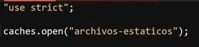
Los objetos caché se podrían considerar como un almacén de objetos (tabla), estos están estructurados por diferentes secciones las cuales son:
Índice: Identificador numérico del archivo.
Name: Nombre del archivo.
Response-Type: Tipo de respuesta, ejemplo: "Basic".
Content-Type: Tipo de contenido, ejemplo: "text/html".
Content-Length: Tamaño del archivo.
Time Cached: Hora en la que fue almacenado el dato.
Ejemplo
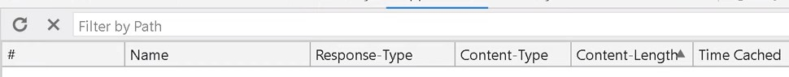
Al trabajar con la caché se utilizan promesas, razón por la cual para ingresar un dato en el "objeto caché" se utiliza el método ".then", al cual se le asigna una función flecha la cual recibe el objeto "cache", el cual se trata de un objeto especial que posee diversos métodos particulares para trabajar con el "cacheStorage".
Ejemplo
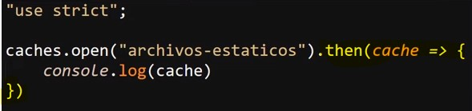
Los métodos particulares del objeto "cache" son:
-
.add( )
Este método envía una request, es decir, toma una URL, la recupera y agrega el objeto de respuesta resultante a la caché dada; en otras palabras, si tanto el objeto "cache" como el objeto a guardar existen, este será almacenado en la caché.
Ejemplo
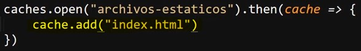
Resultado
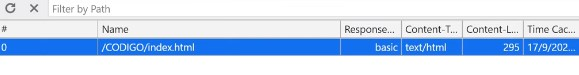
De este modo es como se puede indicar que se debe guardar el archivo "index.html" en la caché del equipo.
Una particularidad de este método es que es equivalente a usar "fetch( )", para simplificar la respuesta y luego usar "put( )" para añadir los datos a la caché; es decir, este método permite simplificar el código.
-
.put(request, response)
Este método permite añadir objetos a la caché; no obstante, ya que el método "add( )" representa una alternativa más eficiente para esto, lo más normal es que el método "put( )" se use únicamente cuando se desea realizar algún cambio en un elemento ya existente.
Ejemplo
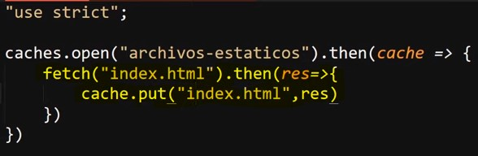
-
.addAll(request)
Este método realiza la misma función que "add( )", con la diferencia de que este método se encuentra adaptado para añadir múltiples archivos a la caché.
Por lo tanto, la diferencia radica en que ".addAll( )" no acepta strings, en su lugar recibe un array el cual debe contener todos los archivos que serán añadidos a la caché.
Ejemplo
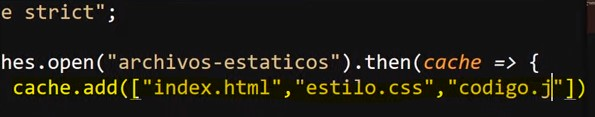
Resultado
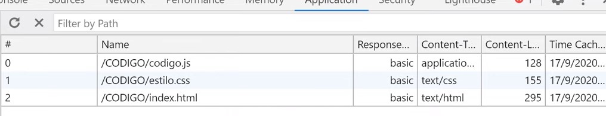
-
.match(request, options)
Devuelve una promesa que se resuelve con la respuesta asociada con la primera solicitud coincidente en el objeto almacenado; es decir, este método retorna una promesa, la cual retorna el primer elemento que coincida con la solicitud realizada.
Ejemplo
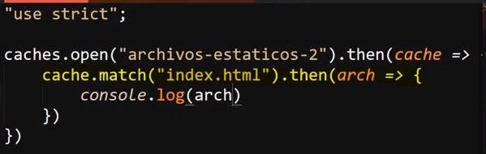
No olvidar que se usa el método ".then( )" debido a que ".match( )" retorna una promesa; debido a esto, el ".then( )" se usa para definir el código a ejecutar con el elemento obtenido.
Resultado
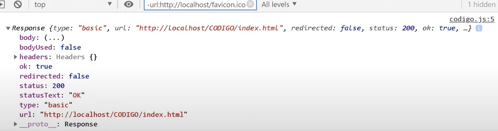
En este resultado se observa la respuesta de la promesa, la cual en este caso se trata de un archivo HTML; sin embargo, hasta el momento con los elementos impartidos no hay muchas acciones que se puedan realizar con este archivo, esto se desglosará más adelante.
-
.matchAll(request, options)
Devuelve una promesa que se resuelve con una matriz con todas las solicitudes coincidentes en el objeto almacenado; es decir, este método retorna una promesa, la cual retorna una matriz (tipo de array) con todos aquellos elementos que coincidan con la solicitud realizada.
Ejemplo
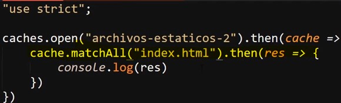
Resultado
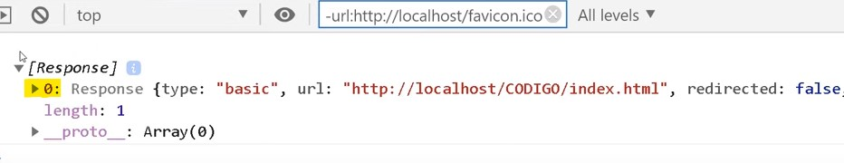
En este resultado se puede observar el índice del dato, lo que indica que este se encuentra en un array.
-
.delete( request, options)
Este método es exactamente el opuesto a ".add( )", ya que en vez de añadir un elemento a la caché lo elimina, con la característica particular de retornar una promesa la cual retorna un valor booleano para indicar si el elemento se encontró y eliminó (true) o no se pudo encontrar (false).
-
.keys( )
Este método retorna una promesa que a su vez retorna una matriz con los "keys" de los objetos almacenados en la caché; es decir, este método retorna una promesa que retorna un array con todos los elementos almacenados en la caché.
Ejemplo
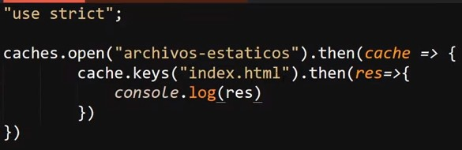
Resultado
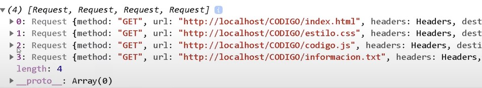